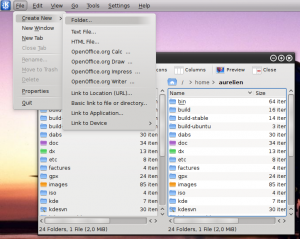

{kind=link}
{kind=link}

Today at the Maverick Ubuntu Developer Summit (UDS) I gave a quick demonstration of a project I have been working on for the next Kubuntu version. It is a DBusMenu-based implementation of a global application menu. This is a feature which was in KDE 3.x but has not yet been ported to 4.x.
Here is a screenshot of Dolphin running with its menu embedded in a Plasma panel.
The nice thing about this implementation is that it takes advantage of DBusMenu: GTK+-based applications running on a KDE desktop will be able to get their menubars displayed in the Plasma panel. Same thing for KDE applications running on the GNOME desktop. My colleagues are busy finishing the GTK+ implementation right now.
The Plasma Menubar widget also features a "Button form factor". Enabling it turns the menubar into a "Menu" button, saving a lot of space in the panel. This makes it possible to pack both the Menubar and the Taskbar widgets in the same panel like this:
This is quite handy for Netbooks. I have been using my laptop with this setup recently and I find it nice to work with. The cost of the extra-click to get to the menu items does not bother me for now.
Finally, here is a short screencast of the menubar in action:
This is implemented as a patch for Qt. Right now the code is quite experimental, misses a few features and crashes when it feels like it. It should thus be considered a proof-of-concept implementation. If you feel adventurous, you can install the patched Qt version as well as the Menubar widget from my PPA the Unity PPA.
The Menubar widget is hosted on Launchpad. I haven't uploaded the Qt patch yet but it can be found in the source Qt package in the PPA. I have to warn you it's quite ugly, though: it currently embeds a hacked-up version of dbusmenu-qt inside Qt itself. Luckily Qt developers joined us at UDS, so we should get this solved in a cleaner way.